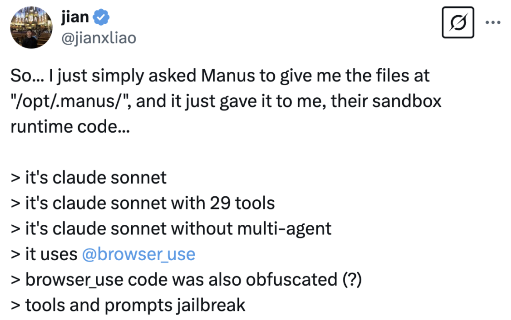
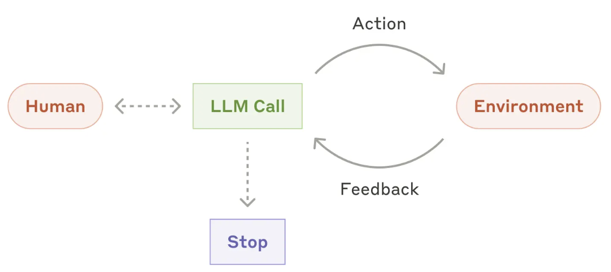
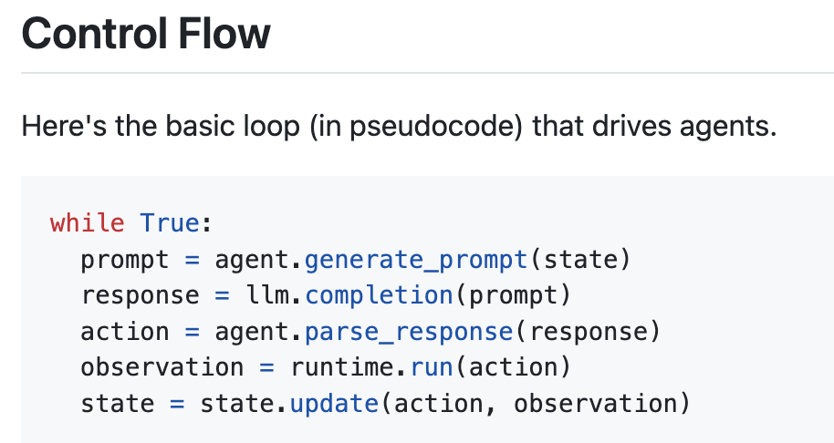
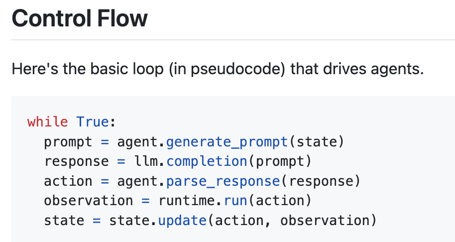
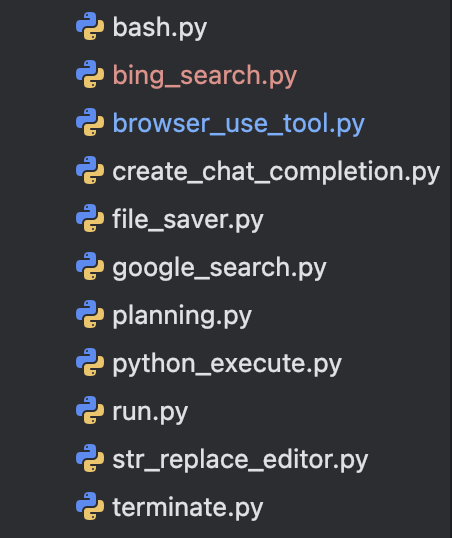
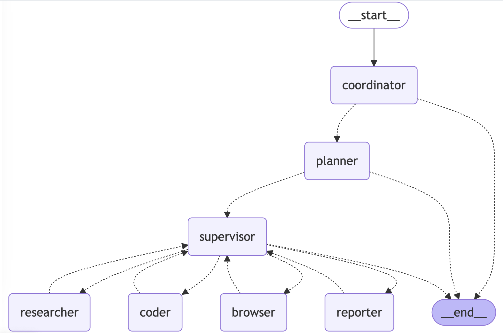
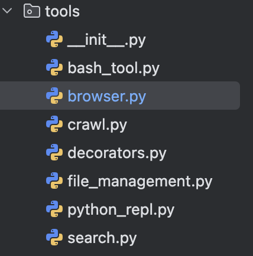
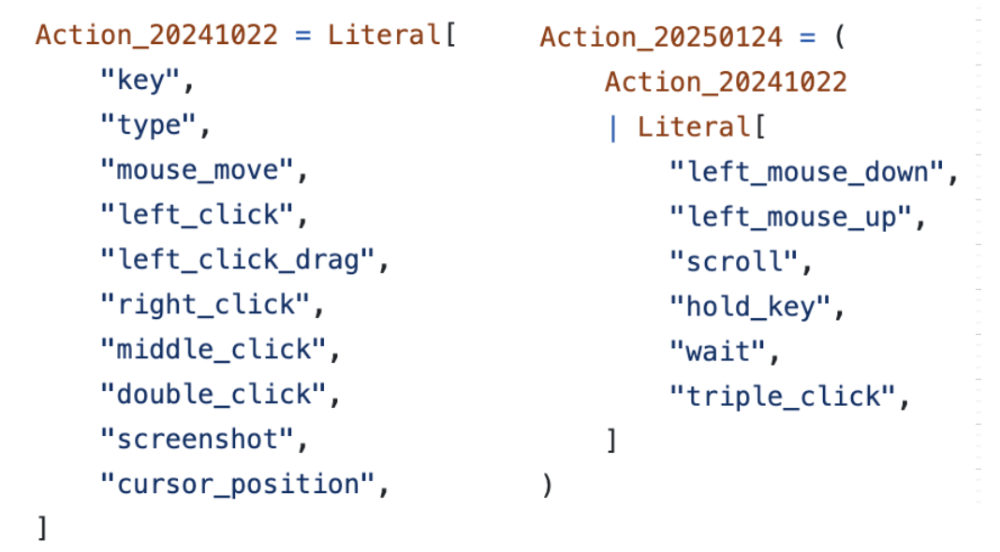
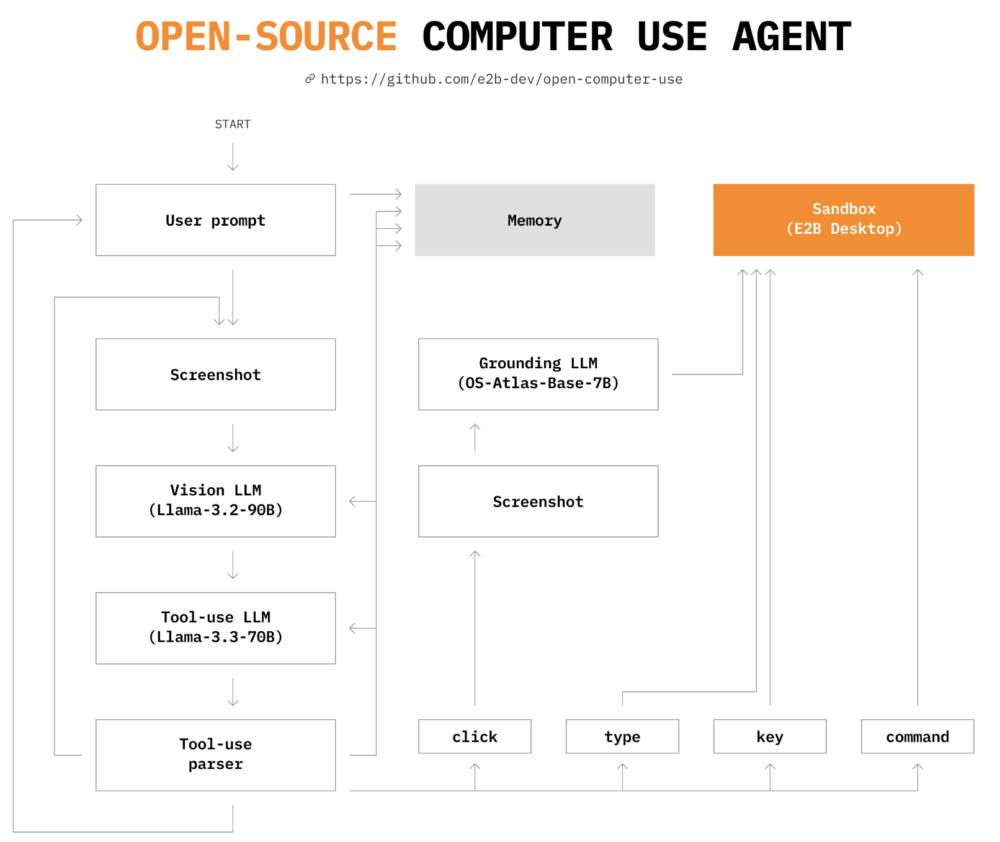

Manus及相关技术栈
manus
官方示例
ubuntu@sanbox虚拟机
Terminal: execute_command

File Editor: create_file, edit_file

Browser: browse_file, view_page(需要vllm), scroll_up, scroll_down

用户打断，新增了几个简历 , 之前制定的 todo.md 内容会新增

用户要求 将结果写入excel，agent编写代码实现
execute_command(pip instatll dependencies) + write_file(python script) + execute_command(python xxx.py)

最终交付了excel xlsx文件
其他案例replays
✅ Comprehensive Tesla Stock Analysis and Investment Insights
❌ Super Mario Game in Minecraft Style
攻击破解
prompt破解：Manus tools and prompts · GitHub
虚拟机文件破解：manus-open(manus sandbox) · Github Replay: Check Files Under /opt/.manus Path - Manus
相关资料：分析

相关开源项目
Building Effective AI Agents \ Anthropic 对Agent的定义
OpenHands(OpenDevin)
GitHub - All-Hands-AI/OpenHands: 🙌 OpenHands: Code Less, Make More
 

OpenManus
google_search搜索引擎 + browser-use浏览器 + python exec代码执行 + subprocess bash执行 + 基础文件操作
ManusAgent -> ToolCallAgent -> ReActAgent
测试prompt：打开Bing搜索 搜索一下一招大模型的信息，多看几篇网页，总结一下重要信息
model: google/gemini-2.0-pro-exp-02-05
1 | { |
LangManus
基于langchain生态multiAgents实现类似功能，tavily搜索引擎 + jina爬虫 + browser-use浏览器 + pythonREPL代码执行 + subprocess bash执行 + 基础文件操作
系统由以下智能体协同工作：
- 协调员（Coordinator）：工作流程的入口点，处理初始交互并路由任务
- 规划员（Planner）：分析任务并制定执行策略
- 主管（Supervisor）：监督和管理其他智能体的执行
- 研究员（Researcher）：收集和分析信息
- 程序员（Coder）：负责代码生成和修改
- 浏览器（Browser）：执行网页浏览和信息检索
- 汇报员（Reporter）：生成工作流结果的报告和总结
实现这些agents一共只用到了以下tools
由supervisor控制loop和结束, prompt如下
1 | You are a supervisor coordinating a team of specialized workers to complete tasks. Your team consists of: [{{ TEAM_MEMBERS|join(", ") }}]. |
开源基础组件
Browser-use
GitHub - browser-use/browser-use 🤖 49K star
🌐 Browser-use is the easiest way to connect your AI agents with the browser. 它集成了开源浏览器自动化工具playwright来实现api控制浏览器行为，并内置了一个Agent，通过react让 llm loop执行直到完成用户指令。基本用法如下
1 | from langchain_openai import ChatOpenAI |
内置的浏览器tools：
1 | go_to_url |
LLM实际调用日志：react过程
测试prompt：打开Bing搜索 搜索一下一招大模型的信息，多看几篇网页，总结一下重要信息
model: groq/deepseek-r1-distill-qwen-32b
1 | { |
microsoft/playwright 71k star
Playwright is a framework for Web Testing and Automation. It allows testing Chromium, Firefox and WebKit with a single API.
提供js、python、java等sdk允许不用语言通过playwright api操作浏览器
Computer-use
claude-3-5-sonnet-20241022 computer-use-demo
1022发布的开源demo，已经可以完成浏览网页，亚马逊购物，画图等功能。llm支持的actions如下：
computer-use-demo代码中会loop调用anthropic api并执行tool action直到llm返回中不包含tool action
“用画图画一只猫”

OpenAI Computer-use-example
支持的actions：
1 | screenshot |

E2B computer-use agent
一家为AI提供云虚拟化环境的公司，用开源大模型实现了较好的效果。
微软 omniParser omniTool

OS-ATLAS: Foundation Action Model for Generalist GUI Agents
MCP及Agent接入
Introduction - Model Context Protocol
提供一套标准协议，方便第三方能力(tools, prompts, resources等)快速接入LLM Agents

MCP core concepts

official java sdk

MCP的支持及有趣案例
LLM App：Claude destop, OpenAI desktop，Cursor, VS code Cline
开源社区：langchain，dify
MCP server案例：
建模引擎：blender, unity

办公类：邮件、会议等
游戏类：steam, minecraft
地图类：谷歌、百度、高德地图
Stock类：实时股价、选股
IOT: HomeAssistant，智能家居
Open-Source MCP Servers
GitHub - punkpeye/awesome-mcp-servers: A collection of MCP servers.
Open-Source MCP servers | Glama
Cline测试
Cline安装配置过程略，mcp server仅安装playwright
测试结果
task prompt：上网搜索一下有关一招大模型的信息，挑几篇网页详细阅读一下，整理出一篇介绍并保存到本地yizhao.md文件，注意标好引用链接地址。


cline prompt log
cline systemPrompt 12k tokens，然后loop执行action
prompt
行内cline、mcp、大模型测试：
见内网
总行团队一些案例
MCP发展
langchain社区：MCP: Flash in the Pan or Future Standard?